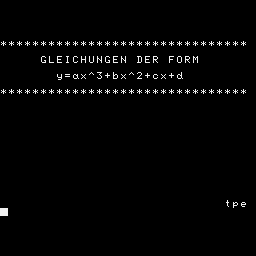
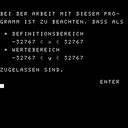
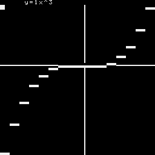
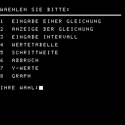

1000 2361 0000 b ...
KUBI
BEACHTEN SIE BITTE :
DIE BESTE AUFLOESUNG DER GRAPHISCHEN
DARSTELLUNG ERGIBT SICH BEI
INTERVALLEN MIT MEHR ALS 60
GANZZAHLIGEN X-WERTEN.
FALLS DER WERTEBEREICH UEBER-
SCHRITTEN WIRD (Es erscheint die
Fehlermeldung: HOW? vom BASIC-
Interpreter) MUSS MIT >RUN ENTER<
NEUGESTARTET WERDEN
Zeichensatz UTF-8+Z1013()+CTRL()-ohne Umlaute(äöüß)
10 GOTO 1000
11 U=64;@(64)=32
12 IF P<0 Q=10
13 IF P>0 Q=54
14 IF P=0 Q=32
15 FOR V=0 TO 63
16 @(V)=Q
17 NEXT V
18 GOTO 87
20 O.12;TAB(160);P."BITTE 4 ZEILEN GEDULD !";P.;P.
21 D=E-A;R=65;U=65
22 IF D>=63 T=D/63
23 W=HEX(EFE0)
24 IF D<63 T=64/D+1
25 IF D<32 T=64/D
26 P=32767;Q=-32767;Z=0;C=0
30 FOR V=0 TO 63
32 IF D<=63 X=A+V/T
34 IF D>63 X=A+V*T
36 GOSUB 4100
38 @(V)=Y
40 IF Y<P P=Y
42 IF Y>Q Q=Y
43 IF Y=Z Z=Z+1
44 IF Y/ABS(Y-Z)=0 U=V
45 IF X=0 R=V;C=7
46 IF C=7 GOTO 48
47 IF X/T=0 R=V
48 P." ",
49 Z=Y
50 NEXT V
52 D=Q-P;IF D=0 GOTO 11
53 IF P>0 GOTO 300
54 IF D=63 GOTO 80
56 IF D>63 GOTO 70
57 REM STRECKEN
58 M=63/D
60 FOR V=0 TO 63
62 @(V)=@(V)*M
64 NEXT V
66 P=P*M
68 GOTO 80
69 REM STAUCHEN
70 M=D/63+1
72 FOR V=0 TO 63
74 @(V)=@(V)/M
76 NEXT V
78 P=P/M
79 REM VERSCHIEBEN
80 IF P>=0 GOTO 87
82 FOR V=0 TO 63
84 @(V)=@(V)-P
86 NEXT V
87 O.12;IF R>63 GOTO 92
88 FOR V=0 TO 31 ;REM Y-ACHSE
89 POKE(W+R/2-V*32),161
90 NEXT V
92 IF U>64 GOTO 100
93 FOR V=0 TO 31;REM X-ACHSE
94 POKE(W+V-@(U)/2*32),160
95 NEXT V
100 W=W
110 FOR X=0 TO 63
120 IF X#X/2*2 GOTO 180
130 G=176;IF @(X)=@(X)/2*2 G=179
140 POKE(W+X/2-@(X)/2*32),G
150 NEXT X
152 N=5
154 GOSUB 2040
156 N=0
160 F=INCHAR;F=0
165 O.12
170 RETURN
180 IF @(X)/2#@(X-1)/2 GOTO 210
185 IF @(X)=@(X-1) GOTO 230
190 G=185;IF @(X)<@(X-1) G=184
200 GOTO 140
210 G=177;IF @(X)=@(X)/2*2 G=178
220 GOTO 140
230 G=183;IF @(X)#@(X)/2*2 G=182
240 GOTO 140
300 FOR V=0 TO 63
310 @(V)=@(V)-P+10
320 NEXT V
330 Q=Q-P;P=0
340 GOTO 52
1000 O.12
1010 TAB(160)
1020 P."*******************************"
1030 P.
1040 P." GLEICHUNGEN DER FORM"
1050 P.
1060 P." y=ax^3+bx^2+cx+d"
1070 P.
1080 P."*******************************"
1090 TAB(444)
1100 P."tpe"
1110 FOR Z=0 TO 3000;NEXT Z
1120 O.12
1130 TAB(96)
1140 P."BEI DER ARBEIT MIT DIESEM PRO-"
1145 P.
1150 P."GRAMM IST ZU BEACHTEN, DASS ALS"
1155 P.
1156 P.
1160 P." * DEFINITIONSBEREICH"
1170 P.
1180 P." -32767 < x < 32767"
1190 P.
1200 P." * WERTEBEREICH"
1210 P.
1220 P." -32767 < y < 32767"
1230 P.
1240 P.
1250 P."ZUGELASSEN SIND."
1260 TAB(89)
1270 P."ENTER"
1280 F=INCHAR
1281 O.12;TAB(96);P."BEACHTEN SIE BITTE :";P.;P.;P.
1282 P."DIE BESTE AUFLOESUNG DER GRA-";P.
1283 P."PHISCHEN DARSTELLUNG ERGIBT";P.
1284 P."SICH BEI INTERVALLEN MIT MEHR";P.
1285 P."ALS 60 GANZZAHLIGEN X-WERTEN."
1286 P.;P."FALLS DER WERTEBEREICH UEBER-";P.
1287 P."SCHRITTEN WIRD (HOW?) MUSS MIT";P.
1288 P.">RUN ENTER< NEUGESTARTET WERDEN";P.;F.F=1TO32;P."!",;N.F
1289 P.;P.;P." ENTER";F=INCHAR;F=0
1290 O.12
1300 TAB(64)
1310 P."WAEHLEN SIE BITTE:"
1320 P.""
1330 P.
1340 P."1 EINGABE EINER GLEICHUNG"
1350 P.
1360 P."2 ANZEIGE DER GLEICHUNG"
1370 P.
1380 P."3 EINGABE INTERVALL"
1390 P.
1400 P."4 WERTETABELLE"
1410 P.
1420 P."5 SCHRITTWEITE"
1430 P.
1440 P."6 ABBRUCH"
1441 P.
1442 P."7 Y-WERTE"
1443 P.
1444 P."8 GRAPH"
1450 P.;P.
1460 INPUT"IHRE WAHL"O
1461 IF O=1 GOSUB 1500
1462 IF O=2 GOSUB 2000
1463 IF O=3 GOSUB 3000
1464 IF O=4 GOSUB 4000
1465 IF O=5 GOSUB 3140
1466 IF O=6 STOP
1467 IF O=7 GOSUB 7000
1468 IF O=8 GOSUB 20
1469 IF O>8 GOTO 1290
1470 IF O<1 GOTO 1290
1472 GOTO 1300
1500 O.12
1510 TAB(96)
1520 P."EINGABE DER KOEFFIZIENTEN"
1530 P.""
1540 P.
1550 INPUT" x^3 "K
1555 P.
1560 INPUT" x^2 "J
1565 P.
1570 INPUT" x "I
1575 P.
1580 INPUT" lin "H
1585 O.12
1590 RETURN
2000 O.12
2030 P.
2040 P." y=",
2045 F=0
2050 IF K=0 GOTO 2070
2052 F=1
2054 IF K<0 P."-",
2056 P.#1,ABS(K),"x^3",
2070 IF J=0 GOTO 2090
2072 IF F=0 GOTO 2075
2073 IF J>0 P."+",
2075 IF J<0 P."-",
2080 P.#1,ABS(J),"x^2",
2085 F=1
2090 IF I=0 GOTO 2100
2091 IF F=0 GOTO 2095
2092 IF I>0 P."+",
2095 IF I<0 P."-",
2097 P.#1,ABS(I),"x",
2098 F=I
2100 IF F=0 GOTO 2106
2102 IF H=0 GOTO 2111
2104 IF H>0 P."+",
2106 IF H<0 P."-",
2110 P.#1,ABS(H)
2111 P.
2115 IF N=5 RETURN
2116 P.
2117 P."DAS GEWUENSCHTE INTERVALL :"
2118 P.
2120 P.A," <= x <= ",#1,E
2121 P.
2150 RETURN
3000 O.12
3010 TAB(160)
3020 P."IN WELCHEM INTERVALL INTERES-"
3030 P.
3040 P."SIERT SIE DIE FUNKTION ?"
3050 P.;P.
3060 INPUT"VON..."A
3064 P.
3065 INPUT"...BIS"E
3066 IF A<E GOTO 3070
3067 O.12;TAB(160);P."BITTE UEBERLEGEN SIE !";TAB(64);G.3060
3070 O.12
3080 TAB(160)
3090 P."UNTERSUCHUNG IM INTERVALL :"
3095 P.
3100 P.A," <= x <= ",#1,E
3110 P.;P.
3120 P."WOLLEN SIE KORRIGIEREN ?"
3121 P." J/N"
3125 P.
3128 F=INCHAR
3130 IF F='J' GOTO 3060
3140 O.12
3150 TAB(160)
3160 P."SIE KOENNEN FUER DIE BERECHNUNG"
3170 P.
3180 P."DER WERTETABELLE DIE SCHRITT-";P.
3190 P."WEITE VORGEBEN !"
3195 P.;P.
3200 INPUT"SCHRITTWEITE"S
3210 IF S<=0 S=1
3215 O.12
3220 RETURN
4000 O.12
4010 P.;P.
4020 P." x y"
4030 P.""
4035 F=0
4040 FOR X=A TO E STEP S
4050 GOSUB 4100
4060 P.
4070 P.#10,X,Y
4075 F=F+1
4080 IF F=10 P.;P." WEITER MIT ENTER";F=INCHAR;F=0
4090 NEXT X
4091 P.;P."DAS WAR DER LETZTE WERT"
4092 P.
4093 P.;P." ENTER !";F=INCHAR;F=0
4094 O.12
4095 RETURN
4100 Y=K*X*X*X+J*X*X+I*X+H
4110 RETURN
7000 O.12
7001 TAB(96)
7002 N=5
7004 GOSUB 2040
7006 N=0
7010 TAB(160)
7020 INPUT"X-WERT"X
7030 P.
7040 GOSUB 4100
7050 P." y(",#1,X,")=",#1,Y
7060 P.;P.
7070 P."WEITERER Y-WERT ?"
7071 P." J/N"
7072 P.
7076 F=INCHAR
7077 IF F='J' GOTO 7000
7080 F=0
7090 O.12
7100 RETURN